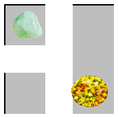
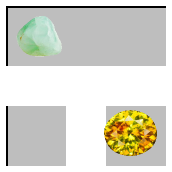

4 —
Due Thursday, 20 October 2022, 11:59:59pm
Delivery Place the product of this week’s milestone into your git repo as follows:
for the Programming Task, place strategy.PP into Maze/Players/;
Some languages demand a specific organization within the file system. In that case, you may place a link to strategy.PP into Maze/Players/
for the Design Task, place player-protocol.md into Planning/
for the Testing task, place xstate and Tests/ into a top-level repo directory named 4
All previous comments on code files apply.
Programming Task Fundamentals I teaches to abstract after you have seen several similar pieces of code. In this situation, you can see ahead of time that the playing mechanics remains the same, that the decision-making changes, and what the decision-making is all about. It is therefore appropriate to abstract immediately. An AI player needs a strategy. Indeed, an ambitious participant in a Maze game may wish to experiment with more than one strategy. So a player component should handle the mechanics of playing a game and should abstract over a strategy component.
which row/column should the player move and in which direction;
how far should the spare tile be rotated before it is inserted; and
to which tile coordinate should the player move its avatar.
A principled approach is to start with the tile that a player should move to and work backwards from there to answers to the first two questions. Each player (privately) knows at any moment in time which tile it has to reach.
If the player can successfully reach the desired goal, obviously they it should choose that; that is, the player's current goal is the highest priority candidate. If it is impossible to reach the goal tile, the player should explore some alternative goals candidates. For this first strategy, the player enumerates all tiles coordinats in row-column order, starting from the top-most, left-most one and chooses those as alternative goals.
Then, for each enumerated tilecandidate, in order, the strategy first starts from the top of the board and tries sliding each successive possible row (trying to slide it left first, then right), before next starting from the left of the board and trying each possible column (again trying to slide each one up first, then down).
For each sliding action, it experiments with all possible rotations of the spare tile—
in the order of Degrees listed— and tries inserting the tile into the freed-up spot. Finally, for each of these actions (sliding plus rotating and inserting), it checks whether the chosen goal (original or alternative) tile coordinate becomes reachable.
If so, it stops the search and chooses the first such successful action.
A second, similar strategy orders the alternative goal candidates according to their Euclidean distance to the original goal tile. To break ties (among candidates with equal distances to the original goal), it uses the lexicographical (row-column) ordering of the first strategy. Let’s call this one the Euclid strategy.
Design Task The player components must communicate with the referee.
This communication involves both function/method calls and orderings of those,
i.e., a protocol. Since outsiders will program to this interface, it must be
spelled out precisely and in detail. Hint To start your
brainstorming—
A protocol supplements an API to explain the calling sequence. Protocols are rarely checked, violations hard to detect, and the resulting errors tend to be obscure.
Design the interaction protocol between the referee and the player(s). The document, named player-protocol.md, should be a well-organized English write-up. If you are familiar with UML sequence diagrams (or you have time to read up on them), illustrate the prose with one of those.
Two pages should suffice. Less is more.
Keep in mind our Maze.Com, a Plan while you work on a design task.
Testing Task Create a test harness named xstate. The harness consumes its JSON input from STDIN and produces its results to STDOUT. Create five tests and place them in the specified Tests/ folder.
A test case always consists of given inputs and expected outputs. For this
course, a test consists of a pair of files: n-in.json, the input file, and
n-out.json, the expected output file, where n is an integer between 0
and the requested number of tests (exclusive).—
a State object, which describes what the player knows about the state of the game;
an Index, designating a row or column;
the Direction, in which the row or column is shifted; and
a Degree, which specifies how much the spare tile of the given State is rotated before it is inserted into the freed-up spot on the board.
The test harness shifts the specified row or column of the state’s board in the given direction, rotates the state’s spare tile by the specified number of Degrees, and inserts it at the spot left open by the shift action. In short, it performs the first two steps of a player’s turn. Once done, it computes the coordinates to which the current player can move its avatar.
{ "board" : Board, |
"spare" : Tile, |
"last" : Action } |
|
INTERPRETATION Describes the current state of the board; the spare tile; the |
players and in what order they take turns (left to right); and the last |
sliding action performed (if any). The first item in "plmt" is the |
current player. |
|
CONSTRAINTS The "plmt" must be populated by a non-empty array. |
The colors of any two Players must be different. |
|
{ "tilekey" : Connector, |
"1-image" : Gem, |
"2-image" : Gem } |
|
{ "current" : Coordinate, |
"home" : Coordinate, |
"color" : Color } |
|
INTERPRETATION Describes a player's current location, the |
location of its home, and the color of its avatar. |
|
|
INTERPRETATION Specifies the last sliding action that an actor |
performed; null indicates that no sliding action has been performed yet. |
|
|
INTERPRETATION Describes the direction in which a player may slide the tiles of a row |
or column. For example, "LEFT" means that the spare tile is inserted into the |
right side, such that the pieces move to the left, and the |
left-most tile of the row drops out. |
|
|
INTERPRETATION Describes the four possible counter-clockwise rotations around |
the center of a tile. Here is an example: |
Remember it is okay if the rendering of your tile rotation puts the gems at some other place.
degree = 0
degree = 90
degree = 180
degree = 270


- a String that matches the regular expression |
"^[A-F|\d][A-F|\d][A-F|\d][A-F|\d][A-F|\d][A-F|\d]$" |
- "purple", |
- "orange", |
- "pink", |
- "red", |
- "blue", |
- "green", |
- "yellow", |
- "white", |
- "black". |
|
INTERPRETATION Describes a lot of colors you may use. The regular expression |
matches a hexcode RGB value. The strings are self-explanatory. |
Well-formed and Valid You may assume that all inputs to your test harnesses from STDIN are well-formed and valid. A well-formed piece of JSON satisfies the grammar; such a piece is valid if it also satisfies all the side constraints of a schema specification.